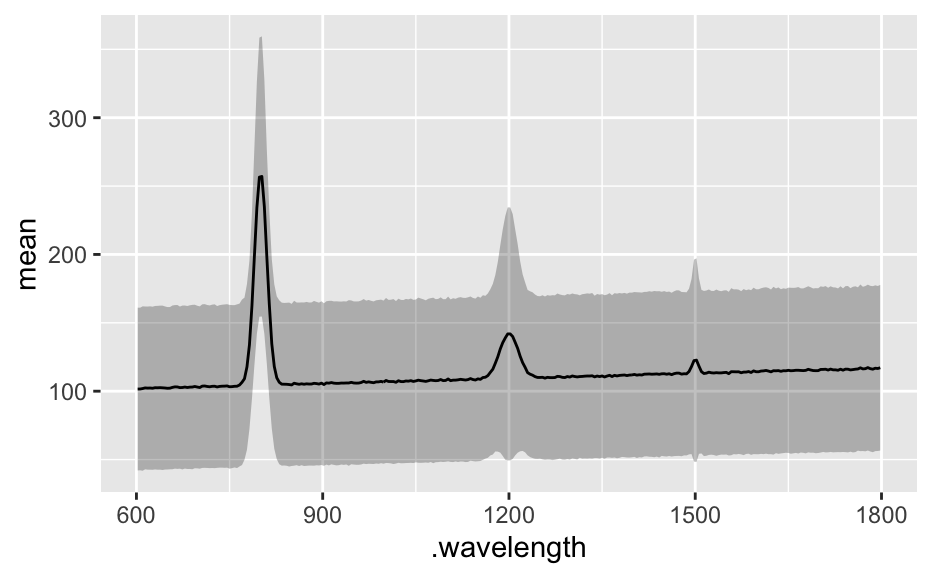

hyperSpec object into a data frame or matrixR/as.data.frame.R
asdataframe.Rdas.data.frame() returns x@data (as data.frame), as.matrix()
returns the spectra matrix x@data$spc as matrix.
The data.frame returned by as.long.df is guaranteed to have columns
spc and .wavelength. If nwl (x) == 0 these columns
will be NA.
# S3 method for hyperSpec as.data.frame(x, row.names = TRUE, optional = NULL, ...) # S3 method for hyperSpec as.matrix(x, ...) as.wide.df(x, wl.prefix = "") as.long.df(x, rownames = FALSE, wl.factor = FALSE, na.rm = TRUE) as.t.df(x)
| x | a |
|---|---|
| row.names | if |
| optional | ignored |
| ... | ignored |
| wl.prefix | prefix to prepend wavelength column names |
| rownames | should the rownames be in column |
| wl.factor | should the wavelengths be returned as a factor (instead of numeric)? |
| na.rm | if |
x@data and x@data$spc (== x$spc == x[[]]), respectively.
as.wide.df returns a data.frame that consists of the extra data and
the spectra matrix converted to a data.frame. The spectra matrix is
expanded in place.
as.long.df returns the stacked or molten version of x@data. The
wavelengths are in column .wavelength.
as.t.df returns a data.frame similar to as.long.df, but each
spectrum in its own column. This is useful for exporting summary spectra,
see the example.
[[]] for a shortcut to as.matrix
utils::stack() and reshape::melt() or reshape2::melt() for
other functions producing long-format data.frames.
C. Beleites
as.data.frame(faux_cell[1:3, , 600 ~ 620])#> x y region spc.602 spc.606 spc.610 spc.614 spc.618 .row #> 1 -11.55 -4.77 matrix 15 22 15 13 15 1 #> 2 -10.55 -4.77 matrix 168 166 159 175 160 2 #> 3 -9.55 -4.77 matrix 112 113 99 115 119 3as.matrix(faux_cell[1:3, , 600 ~ 620])#> 602 606 610 614 618 #> [1,] 15 22 15 13 15 #> [2,] 168 166 159 175 160 #> [3,] 112 113 99 115 119#> #> Call: #> lm(formula = c ~ spc, data = flu[, , 450]) #> #> Coefficients: #> (Intercept) spc #> 0.0038493 0.0004407 #>as.wide.df(faux_cell[1:5, , 600 ~ 610])#> x y region 602 606 610 #> 1 -11.55 -4.77 matrix 15 22 15 #> 2 -10.55 -4.77 matrix 168 166 159 #> 3 -9.55 -4.77 matrix 112 113 99 #> 4 -8.55 -4.77 matrix 23 33 39 #> 5 -7.55 -4.77 matrix 3 0 1#> x y region 602 606 #> Min. :-11.55 Min. :-4.77 cell :0 Min. : 3.0 Min. : 0.0 #> 1st Qu.:-10.55 1st Qu.:-4.77 matrix :5 1st Qu.: 15.0 1st Qu.: 22.0 #> Median : -9.55 Median :-4.77 nucleus:0 Median : 23.0 Median : 33.0 #> Mean : -9.55 Mean :-4.77 Mean : 64.2 Mean : 66.8 #> 3rd Qu.: -8.55 3rd Qu.:-4.77 3rd Qu.:112.0 3rd Qu.:113.0 #> Max. : -7.55 Max. :-4.77 Max. :168.0 Max. :166.0 #> 610 #> Min. : 1.0 #> 1st Qu.: 15.0 #> Median : 39.0 #> Mean : 62.6 #> 3rd Qu.: 99.0 #> Max. :159.0as.long.df(flu[, , 405 ~ 410])#> .wavelength spc filename c #> 1 405.0 27.15000 rawdata/flu1.txt 0.05 #> 2 405.0 66.80133 rawdata/flu2.txt 0.10 #> 3 405.0 93.14433 rawdata/flu3.txt 0.15 #> 4 405.0 130.66367 rawdata/flu4.txt 0.20 #> 5 405.0 167.26667 rawdata/flu5.txt 0.25 #> 6 405.0 198.43033 rawdata/flu6.txt 0.30 #> 1.1 405.5 32.34467 rawdata/flu1.txt 0.05 #> 2.1 405.5 63.71533 rawdata/flu2.txt 0.10 #> 3.1 405.5 103.06767 rawdata/flu3.txt 0.15 #> 4.1 405.5 139.99833 rawdata/flu4.txt 0.20 #> 5.1 405.5 171.89833 rawdata/flu5.txt 0.25 #> 6.1 405.5 209.45800 rawdata/flu6.txt 0.30 #> 1.2 406.0 33.37867 rawdata/flu1.txt 0.05 #> 2.2 406.0 66.71200 rawdata/flu2.txt 0.10 #> 3.2 406.0 106.19367 rawdata/flu3.txt 0.15 #> 4.2 406.0 143.79767 rawdata/flu4.txt 0.20 #> 5.2 406.0 177.47067 rawdata/flu5.txt 0.25 #> 6.2 406.0 215.78500 rawdata/flu6.txt 0.30 #> 1.3 406.5 34.41933 rawdata/flu1.txt 0.05 #> 2.3 406.5 69.58233 rawdata/flu2.txt 0.10 #> 3.3 406.5 110.18633 rawdata/flu3.txt 0.15 #> 4.3 406.5 148.42000 rawdata/flu4.txt 0.20 #> 5.3 406.5 184.62467 rawdata/flu5.txt 0.25 #> 6.3 406.5 224.58700 rawdata/flu6.txt 0.30 #> 1.4 407.0 36.53133 rawdata/flu1.txt 0.05 #> 2.4 407.0 72.52967 rawdata/flu2.txt 0.10 #> 3.4 407.0 113.24867 rawdata/flu3.txt 0.15 #> 4.4 407.0 152.13267 rawdata/flu4.txt 0.20 #> 5.4 407.0 189.75233 rawdata/flu5.txt 0.25 #> 6.4 407.0 232.52800 rawdata/flu6.txt 0.30 #> 1.5 407.5 37.64767 rawdata/flu1.txt 0.05 #> 2.5 407.5 74.55833 rawdata/flu2.txt 0.10 #> 3.5 407.5 119.17300 rawdata/flu3.txt 0.15 #> 4.5 407.5 159.31033 rawdata/flu4.txt 0.20 #> 5.5 407.5 198.11533 rawdata/flu5.txt 0.25 #> 6.5 407.5 240.77133 rawdata/flu6.txt 0.30 #> 1.6 408.0 38.13700 rawdata/flu1.txt 0.05 #> 2.6 408.0 77.04800 rawdata/flu2.txt 0.10 #> 3.6 408.0 121.31333 rawdata/flu3.txt 0.15 #> 4.6 408.0 165.05233 rawdata/flu4.txt 0.20 #> 5.6 408.0 205.56267 rawdata/flu5.txt 0.25 #> 6.6 408.0 248.04667 rawdata/flu6.txt 0.30 #> 1.7 408.5 39.17700 rawdata/flu1.txt 0.05 #> 2.7 408.5 80.25967 rawdata/flu2.txt 0.10 #> 3.7 408.5 124.67533 rawdata/flu3.txt 0.15 #> 4.7 408.5 168.68967 rawdata/flu4.txt 0.20 #> 5.7 408.5 208.41933 rawdata/flu5.txt 0.25 #> 6.7 408.5 256.89133 rawdata/flu6.txt 0.30 #> 1.8 409.0 40.73567 rawdata/flu1.txt 0.05 #> 2.8 409.0 82.53867 rawdata/flu2.txt 0.10 #> 3.8 409.0 129.56867 rawdata/flu3.txt 0.15 #> 4.8 409.0 175.45900 rawdata/flu4.txt 0.20 #> 5.8 409.0 217.55267 rawdata/flu5.txt 0.25 #> 6.8 409.0 262.73900 rawdata/flu6.txt 0.30 #> 1.9 409.5 41.38133 rawdata/flu1.txt 0.05 #> 2.9 409.5 84.49167 rawdata/flu2.txt 0.10 #> 3.9 409.5 134.11733 rawdata/flu3.txt 0.15 #> 4.9 409.5 181.58100 rawdata/flu4.txt 0.20 #> 5.9 409.5 224.74633 rawdata/flu5.txt 0.25 #> 6.9 409.5 270.27133 rawdata/flu6.txt 0.30 #> 1.10 410.0 44.25133 rawdata/flu1.txt 0.05 #> 2.10 410.0 88.15167 rawdata/flu2.txt 0.10 #> 3.10 410.0 139.98667 rawdata/flu3.txt 0.15 #> 4.10 410.0 185.69233 rawdata/flu4.txt 0.20 #> 5.10 410.0 231.03567 rawdata/flu5.txt 0.25 #> 6.10 410.0 281.82867 rawdata/flu6.txt 0.30#> .wavelength spc filename c #> Min. :405.0 Min. : 27.15 Length:66 Min. :0.050 #> 1st Qu.:406.0 1st Qu.: 75.18 Class :character 1st Qu.:0.100 #> Median :407.5 Median :137.05 Mode :character Median :0.175 #> Mean :407.5 Mean :137.80 Mean :0.175 #> 3rd Qu.:409.0 3rd Qu.:196.02 3rd Qu.:0.250 #> Max. :410.0 Max. :281.83 Max. :0.300#> .rownames .wavelength spc filename c #> 1:11 Min. :405.0 Min. : 27.15 Length:66 Min. :0.050 #> 2:11 1st Qu.:406.0 1st Qu.: 75.18 Class :character 1st Qu.:0.100 #> 3:11 Median :407.5 Median :137.05 Mode :character Median :0.175 #> 4:11 Mean :407.5 Mean :137.80 Mean :0.175 #> 5:11 3rd Qu.:409.0 3rd Qu.:196.02 3rd Qu.:0.250 #> 6:11 Max. :410.0 Max. :281.83 Max. :0.300#> .wavelength spc filename c #> 405 : 6 Min. : 27.15 Length:66 Min. :0.050 #> 405.5 : 6 1st Qu.: 75.18 Class :character 1st Qu.:0.100 #> 406 : 6 Median :137.05 Mode :character Median :0.175 #> 406.5 : 6 Mean :137.80 Mean :0.175 #> 407 : 6 3rd Qu.:196.02 3rd Qu.:0.250 #> 407.5 : 6 Max. :281.83 Max. :0.300 #> (Other):30#> .wavelength mean.minus.sd mean mean.plus.sd #> spc.602 602 42.04492 101.5691 161.0934 #> spc.606 606 42.14042 101.6023 161.0642 #> spc.610 610 41.82034 101.9383 162.0562 #> spc.614 614 42.85471 102.3966 161.9384 #> spc.618 618 42.61228 102.2571 161.9020 #> spc.622 622 42.58845 102.3257 162.0630if (require(ggplot2)) { ggplot(df, aes(x = .wavelength)) + geom_ribbon(aes(ymin = mean.minus.sd, ymax = mean.plus.sd), fill = "#00000040" ) + geom_line(aes(y = mean)) }